III Simpósio do Trato Gastrointestinal
31 de outubro e 1º de novembro de 2025
Novotel Recife Marina
Realização



31 de outubro e 1º de novembro de 2025
Novotel Recife Marina

O Instituto Santa Joana de Ensino e Pesquisa – ISEP, na condição de promotor do evento, ressalta que o principal objetivo desse encontro é promover a atualização, discussão e troca de experiências voltado à área da oncologia do trato gastrointestinal.
O simpósio é destinado a oncologistas clínicos, cirurgiões oncológicos, proctologistas, endocrinologistas, patologistas, radiologistas, radioncologistas, oncogeneticistas, médicos nucleares, cardiologistas e geriatras de todo o Brasil.
Apresentar as principais novidades e promover a troca de experiências na oncologia gastrointestinal.
Modalidade: Aberto para todas as instituições
Número de participantes: 80 vagas
A programação científica está sob responsabilidade de um time multidisciplinar de especialistas:
O III Simpósio TGI é realizado pelas seguintes instituições:
Patrocinadores: AstraZeneca, Roche, Bristol, Merck, Pfizer,
Servier, Ipsen
(Aguardando confirmação de participação)
| Horário | Atividade | Apresentador |
|---|---|---|
| 08:00 | ABERTURA | |
|
Mesa 1 – Multidisciplinariedade em tumores
Gastrointestinais Presidente: Rossano Araújo | Moderadores: Cirurgia, Edith Magalhães, Rafaela Ralph |
||
| 08:15 - 08:30 | Modulação do microbioma intestinal e câncer do TGI | Cristiana Tavares |
| 08:30 - 08:45 | A importância da nutrição do pré e pós-operatório do câncer esofágico | Natália Fernandes |
| 08:45 - 09:00 | Inibidor de GLP1 x câncer | Endocrinologista (a confirmar) |
| 09:00 - 09:15 | Tratamento da obesidade durante o câncer: até onde devemos investir? | José Câmara |
| 09:15 - 09:30 | Navegação e Tumores gastrointestinais | Amanda (Enf.) |
| 09:30 - 09:45 | DISCUSSÃO | |
|
Mesa 2 – ESÔFAGO E ESTÔMAGO Presidente: Antônio de Pádua | Moderadores: Patologista, Ricardo Machado, Thiago Apolinário |
||
| 09:45 - 10:00 | CASO CLÍNICO - Esôfago - Doença localizada | Rodrigo Arruda |
| 10:00 - 10:15 | DISCUSSÃO | |
| 10:15 - 10:30 | Classificação Molecular câncer de estômago | Gustavo Ferreira |
| 10:30 - 10:45 | CASO CLÍNICO - Tratamento perioperatório | Cristiana Tavares |
| 10:45 - 11:00 | DISCUSSÃO | |
| 11:00 - 11:20 | COFFEE BREAK | |
|
Mesa 3 – Câncer de estômago AVANÇADO Presidente: Sandra Oliveira | Moderadores: Rommel Pierre, Tien Chang, Patologista |
||
| 11:20 - 11:35 | CASO CLÍNICO METASTÁTICO NÃO HER 2 | Luis Felipe Carvalho |
| 11:35 - 11:50 | DISCUSSÃO | |
| 11:50 - 12:05 | Tratamento de doença HER 2+ | Ilan Pedrosa |
| 12:05 - 12:20 | Tratamento cirúrgico na doença metastática | Flávio Fernandes |
| 12:20 - 12:35 | Tratamento cirúrgico da carcinomatose peritoneal dos tumores gástricos | Graice Abreu |
| 12:35 - 12:50 | DISCUSSÃO | |
| 12:50 - 13:50 | INTERVALO | |
| 13:50 - 14:20 | Simpósio Satélite ROCHE - Tratamento sistêmico do CHC | Anelise Coutinho |
|
Mesa 4 – Carcinoma Hepatocelular Presidente: Leila Beltrão | Moderadores: Anelise Coutinho, Fernando Cavalcanti |
||
| 14:20 - 14:35 | CASO CLÍNICO - HCC e Transplante - HEPATO | Tibério Medeiros |
| 14:35 - 14:50 | DISCUSSÃO | |
| 14:50 - 15:05 | Quando optar por terapia local? | João Paulo Ayub |
| 15:05 - 15:20 | CASO CLÍNICO - HCC e TTO local e sistêmico | Antônio Douglas |
| 15:20 - 15:35 | DISCUSSÃO | |
| 15:35 - 16:20 | Simpósio Satélite ASTRAZENECA - Tratamento sistêmico do CHC | Rodrigo Taboada |
| 16:20 - 16:35 | COFFEE BREAK | |
|
Mesa 5 – Metástase hepáticas e câncer de vias biliares Presidente: Américo | Moderadores: Gustavo Rivera, Lilian Rose, Diogo Sales |
||
| 16:35 - 16:50 | E o Tx hepático? Um novo horizonte? | Olival Lucena |
| 16:50 - 17:20 | CASO CLÍNICO - Colangio - TTO cirúrgico e sistêmico | Ilan Pedrosa |
| 17:20 - 17:35 | DISCUSSÃO | |
| 17:35 - 18:05 | CONFERÊNCIA - Transplante Hepático | Ben Hur |
| 18:05 | ENCERRAMENTO | |
O simpósio acontecerá no Novotel Recife Marina, hotel que se destaca pelo projeto arquitetônico inspirado em um transatlântico e oferece acomodações modernas com vista para o mar, piscina de borda infinita, spa e excelentes opções gastronômicas.
Endereço:
Cais de Santa Rita, 46 – Bairro São José
Recife – PE, CEP 50.020-455
Localizado no coração de Recife, no complexo Porto Novo Recife, o hotel facilita o acesso às principais atrações turísticas da cidade.
Dica: Aproveite o rooftop do hotel para contemplar a vista da marina e desfrutar de momentos de convivência com os colegas participantes.
O número de participantes é limitado a 80 vagas. Faça sua inscrição gratuitamente através do formulário oficial.
Inscrever-me agoraPara dúvidas sobre o simpósio ou suporte na inscrição, entre em contato com a organização:
Endereço:
Rua João Eugênio de Lima, 143 – Sala 01
Boa Viagem – Recife – CEP 51.030-360
Telefone/WhatsApp:
(81) 99985-1712
(81) 9232-5922
E-mail:
eventos@lukaplan.com.br
simposiodeongologiadohsj@gmail.com
Instagram: @lukaplan_
Esta terceira edição do simpósio faz parte de uma série de encontros temáticos realizados pelo ISEP para fomentar a atualização contínua em oncologia.
Importante: Se precisar cancelar a inscrição, avise a organização com antecedência para permitir que outro profissional ocupe a vaga.
Consulte a agenda de eventos do Instituto para outras iniciativas na área da oncologia gastrointestinal e acompanhe as novidades através dos canais oficiais.